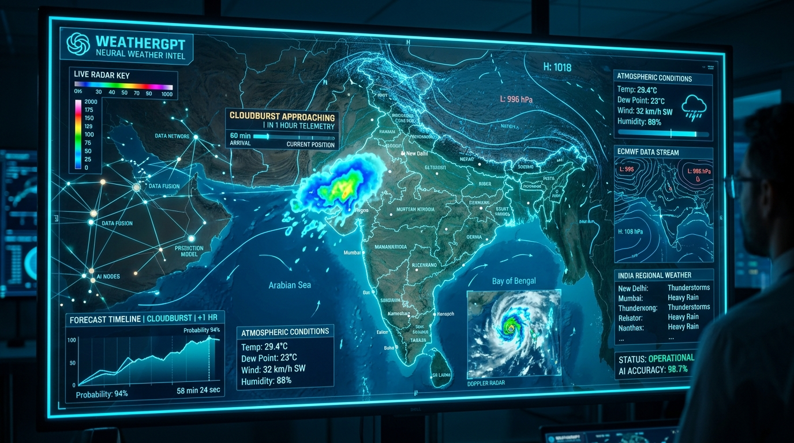
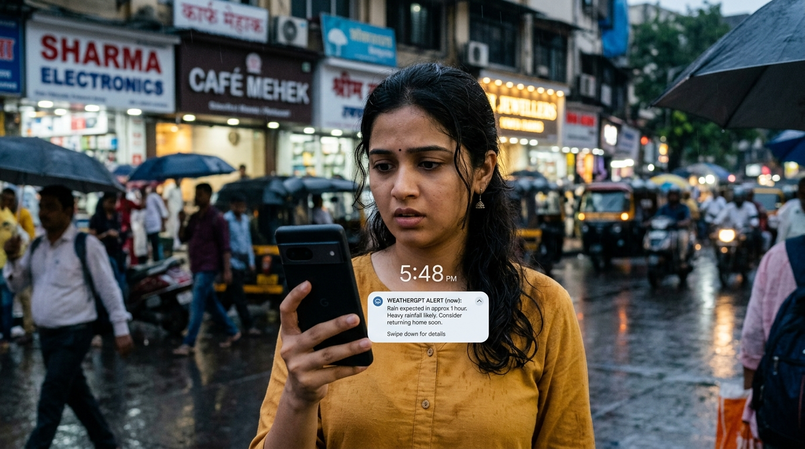
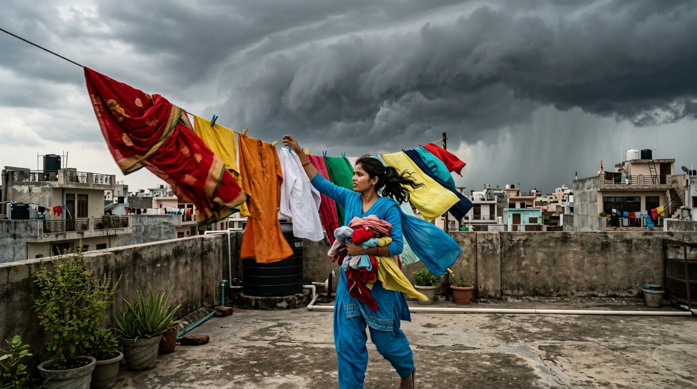

A young citizen is out shopping at the local market. The skies are clear with no signs of rain.

WeatherGPT continuously fuses live satellite radar, numerical physics models, and real-time hyperlocal coordinates.

The phone vibrates with a personalized alert. The citizen receives an exact 1-hour advance warning before any raindrop falls.
Glancing at the subtle shift in high clouds, the citizen trusts the forecast, wraps up shopping, and heads straight home.
Arriving home early gave plenty of buffer. Suddenly, they remember the laundry drying under the open sky.

Pre-monsoon winds accelerate and dark storm clouds loom overhead. Every garment is safely collected in minutes.
A massive torrential downpour submerges the open terrace. If unprepared, all laundry and outdoor goods would have been ruined.
Safe inside with a warm drink, watching the storm safely. One hour of advance AI warning made all the difference.
WEATHERGPT
Know Before It Happens.